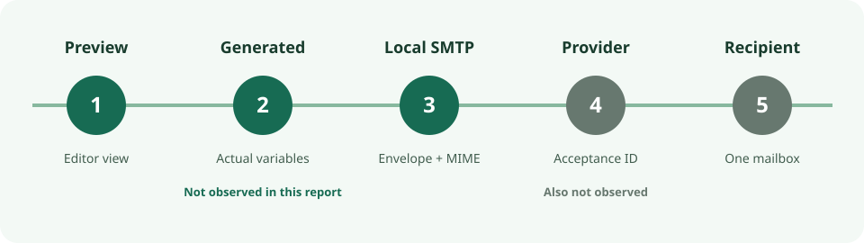

Pre-send email check · 18 Oct 2026 · source-only
Preview the email first. Use a local sink only to inspect SMTP output.
If the installed sender has a reviewable preview or a controlled test mode that cannot become a list send, start there. Mailpit v1.31.5 is a conditional local capture option when the question is what the application submitted over SMTP. Neither route proves provider acceptance, inbox rendering or permission to send. No message was sent or captured for this report.

Choose the smaller check
| Route | Use it when | Stop if | It does not prove |
|---|---|---|---|
| Installed sender preview or controlled test | It displays the approved copy and fictional merge values, with a reviewable destination and no path to an unplanned list send. | The mode's actual recipients, side effects or switch to live sending are unclear. | The exact SMTP transaction, provider acceptance or recipient display. |
| Isolated Mailpit v1.31.5 sink | You need to inspect the application's SMTP envelope and stored MIME without sending externally. | External egress, relay/forwarding/webhooks, UI access, stored data or fallback transport cannot be constrained. | SPF/DKIM/DMARC, suppression, consent, deliverability or campaign outcomes. |
The sender application and its preview behavior were not inspected. The choice is conditional, not a claim that a particular sender is safe.
What each evidence level answers
| Level | Question answered | Status here | Still unknown |
|---|---|---|---|
| 1 · Template preview | Does the editor show the intended static copy and fields? | Option only; sender unknown. | Actual substitution and transport. |
| 2 · Generated message | What subject, HTML and text were produced with fictional values? | Not observed. | SMTP receipt and recipient rendering. |
| 3 · Local SMTP receipt | What envelope, headers, MIME, links and List-Unsubscribe fields reached the sink? | Mailpit capability documented; no local receipt observed. | Provider acceptance, authentication, inbox placement and eligibility. |
| 4 · Authorized provider test | Did the provider accept one approved controlled-address submission, and with what ID or error? | Not observed. | Delivery to all recipients and all-client rendering. |
| 5 · Recipient observation | What did one controlled mailbox/client display? | Not observed. | Other recipients and campaign effect. |
A captured message proves only receipt at that sink under the tested configuration. It does not make the creative approved or the contact eligible.
Mailpit v1.31.5: documented surface, not a tested fixture
The official v1.31.5 release is dated 11 October 2026 and identifies short commit 4355c8c. The tagged Mailpit repository licence is MIT. That does not audit dependencies, images, hosted services or the downstream provider. The release list marked v1.31.5 latest when checked; a release entry is not binary provenance. No archive, image digest or checksum was verified.
The tagged README describes SMTP capture, HTML/text/source/headers/raw-mail and attachment views, REST API, unsubscribe syntax validation, optional checks, relay/forwarding and Chaos errors. In tagged defaults, SMTP listens on [::]:1025 and HTTP/API on [::]:8025: neither is loopback-only. The defaults retain up to 500 messages by count, limit inbound size to 50 MiB, and impose no age limit unless configured. A persistent SQLite path is optional; current storage documentation describes a temporary SQLite file without one. Living documentation can differ from the tag.
The tagged CLI exposes listener, database, count/age, UI auth, allowed-host, allowed-recipient, version-check and Chaos controls. The SMTP guide says the default listener has neither encryption nor authentication; HTTP/API guidance describes optional basic auth. A loopback bind plus enforced network isolation is the first boundary; auth is additional for shared access. Review the effective flags and environment rather than assuming a default is safe.
The relay guide says --smtp-relay-all can send to original recipients; forwarding guidance describes automatic copies. A no-egress fixture must exclude those paths, a relay host and webhooks. The UI policy blocks scripts in mail but permits remote images, including tracking pixels. Link checks and HTML checks can make HTTP requests. Do not open remote media, click links or run those checks in an inert fixture. The v1.31.5 remote CSS/font block flag is not a general egress firewall.
The release list records v1.31.1 API/DNS-rebinding hardening and v1.31.2 a thumbnail memory-allocation fix. This indicates maintenance, not a security certification or permission to expose the UI publicly. Chaos documentation describes deterministic SMTP 451 errors; none was exercised here.
Smallest reproducible capture gate
- Acquire the exact v1.31.5 artifact; record its URL, platform, checksum and provenance. Place the test client and sink in a disposable network with enforced zero external egress. Demonstrate that an attempted connection to a live SMTP relay fails before generating mail. Remove live credentials, contact lists and fallback transports.
- Bind SMTP and UI to loopback, use a disposable database with small retention, disable version checks and allow only anchored
.invalidrecipients. Exclude relay, forwarding, webhooks, POP3, link checks and remote media. RFC 2606 reserves.invalid; the network boundary, not the suffix, prevents external sending. - Send one fictional approved-shape message through the actual application path. Compare envelope, SMTP response, raw MIME, subject, HTML/text, links and unsubscribe fields with the approved source. A stand-alone SMTP-client test would validate only the sink.
- For one safe failure, stop the sink before a second fictional attempt or use a deterministic 451, then inspect the application's actual error, queue/retry and fallback behavior. Stop processes, delete disposable data and verify cleanup. None of these observations predicts provider behavior.
This gate was not executed. No Mailpit artifact or demonstrated isolated no-egress test boundary was available for this report, and no sender application was supplied. The public conclusion is therefore source-only.
Limits and operator evidence
An email-preview discussion includes built-in preview and controlled-account practices and questions about client rendering. A Listmonk/Mailpit integration question identifies an application-to-capture setup problem, not a successful capture. These are qualitative operator signals, not demand estimates or Mailpit reliability data.
Even after a local receipt, real-provider authentication and acceptance, inbox rendering, consent, suppression, unsubscribe behavior and campaign outcomes need separate evidence. If those cannot be checked with an authorized provider and recipient path, stop at the local finding rather than calling the email send-ready.